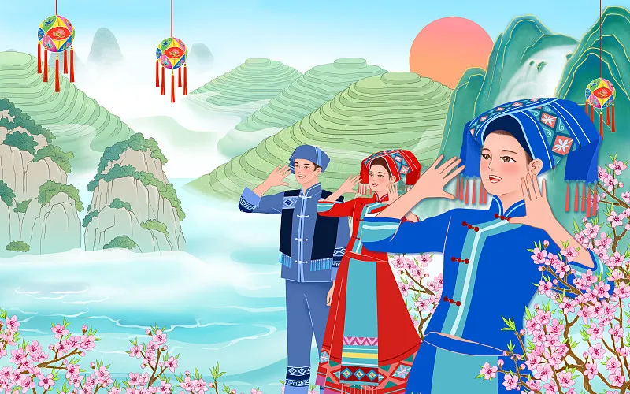
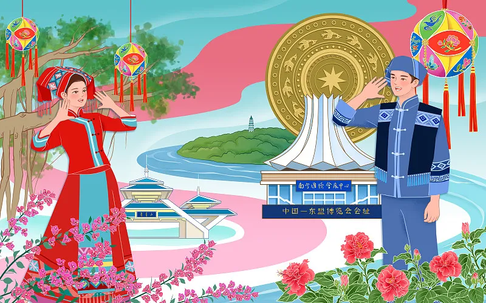

上巳节
———水畔祓禊溯风雅
历史脉络
上巳节初为春秋时期三月上旬巳日的祓禊仪式，《周礼》记载女巫用香草为君王祛灾。魏晋时固定为三月初三，王羲之兰亭修禊开创文人雅集传统。唐代发展为全民春游盛会，长安曲江畔“三月三日天气新，临水多丽人”的盛况被杜甫记录。宋代后逐渐融入清明节。
风俗全景：
曲水流觞：
绍兴兰亭考证发现，晋代使用可漂浮的漆耳杯，酒杯停滞处需即兴作诗，违者罚饮三杯；
芍药定情：
《诗经》中郑国男女互赠芍药，演化成云南彝族“三月会”对歌择偶习俗；
五彩丝禊：
湖北荆州出土楚简记载，楚人将染成青、赤、黄、白、黑五色的丝线系于手腕辟邪；
荠菜花簪：
江南民谚“三月三，荠菜当灵丹”，妇女将荠菜花插鬓角驱疫，今安徽泾县仍存此俗。
文化意义
节日体现“以水为净”的生命哲学，日本延续上巳“雏祭”摆放十二层宫廷人偶的习俗，韩国保留食杜鹃花煎饼传统。2011年西安大唐芙蓉园复原唐代“丽人行”表演，舞者脚踏木屐、手持柳枝，再现“长安水边多丽人”的唐风古韵。
当代活化
浙江文旅局推出“数字修禊”，游客通过AR眼镜观看虚拟文人饮酒赋诗，在曲水中投放电子荷花灯。中医药大学研发“兰亭香囊”，将兰草、佩兰等古方草药制成驱蚊香包，让传统文化融入现代生活。

